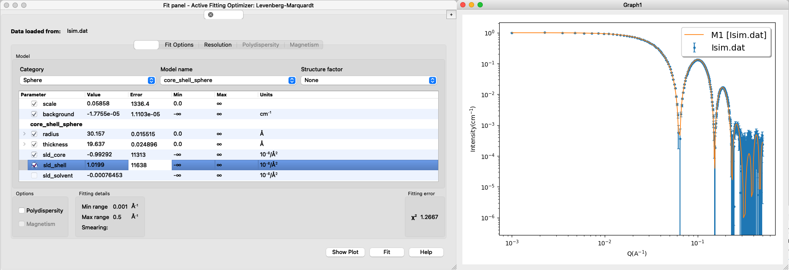

Home
Tutotial: Contrast Variation
Tutorial contributors: Andreas Haahr Larsen
Before you start
- Download and install SasView (on MacOS: you need to install Xcode first).
- We recommend that you first complete the Spheres tutorial.
Learning outcomes
- Explain what contrast is in small-angle neutron scattering (SANS).
- Explain the relationship between contrast and signal-over-noise in SANS data.
- Be able to tune contrasts of a particle such that the forward scattering is zero.
- Be able to fit SANS data from multicontrast particles in SasView, and understand how to avoid parameter correlation.
- Give an example of how SANS contrast variation can be used to probe the structure of a particle
- Be able to calculate scattering lenghts, scattering length densities and contrasts for a molecule
- Explain how the scattering lenghts can be tuned by Hydrogen/Deuterium exchange
- Take a qualified decision about H2O and D2O content in a solvent.
Part 1: Monodisperse spheres with various contrasts
Go to: Shape2SAS, and simulate a spheres with a radius of 50 Å and contrast (excess scattering length density, ΔSLD) of 1 as Model 1, and a sphere with contrast -1 as Model 2 (set parameters and press Submit):

Comment on the resulting scattering. Why is the scattering the same despite that the ΔSLD have opposite sign? (Hint)
Try to vary the contrast. How does a numerically larger ΔSLD affect the simulated scattering, and why? (Hint)
Part 2: Core-shell spheres
Go to: Shape2SAS, and simulate a spherical core-shell particle with inner radius of 30 Å and core ΔSLD of -1, and outer radius of 50 Å and shell ΔSLD of 1. This can be done by combining two spheres as Model 1 (important: the smaller should be above the larger in the list, so the overlapping region is excluded from the larger sphere):

Comments on the results. Try to compare with a sphere with radius 30 Å or 50 Å (as Model 2). What should the radii of the cores-shell (Model 1) be to get an I(0) of 0? (Hint). Try to simulate this. Due to the stochastic nature of Shape2SAS, I(0) may not be exactly 0.
Download the simulated data for the core-shell particle (Model 1): Isim.dat (example data).
Load into SasView and fit a core-shell sphere form factor. The result may look like this:
- Important considerations:
- Are the fitted values the same as the input values? These are not known in an experiment, but here you might still have some prior knowledge of what values are "reasonable".
- Can you fit with different combinations of sldcore, sldshell and sldsolvent? why (not)? (Hint)
- What happens if you fit both sldcore, sldshell and sldsolvent? why? (Hint)
Part 3: Virtual design of a contrast-variation experiment
This part is inspired by Midtgaard et al 2018, where the detergent DDM is matched-out in SANS to get the scattering from a membrane protein, which is solubilized in DDM, without getting the detergent signal.
Go to: Shape2SAS, and simulate a cylinder with radius 30 Å and length 90 Å and ΔSLD of 2. This cylinder is our highly simplistic model of an integral membrane protein. The transmembrane part of the protein is hydrophobic (do not like water), and therefore needs to be solubilized.
As Model 2, simulate a cylinder as surrounded by a ellipsoidal core-shell particle, which is a model for protein in a detergent micelle. To make this model in Shape2SAS, you can use these input parameters. Overlapping regions are excluded (by default), so if two shapes are overlapping, e.g. the cylinder and the first ellipsoid, then the top subunit in the list is prioritized, and overlapping points from the second subunit are not part of the Model:

The following is a schematic cross section of the simplified model of a membrane protein solubilized in a DDM micelle:

The output should look more or less like the below. However, there is some random variation when building the models, so there may be small differences:

We consider the situation, where the scientist is interested in finding the shape of the protein (here: the cylinder), and not the detergent micelle (here: the core-shell ellipsoid). The whole system (protein+micelle) can be fitted simultaneously (see, eg., Perez and Koutsioubas, 2015), but the membrane protein structure can be determined more precisely, if the scattering signal from the micelle is removed.
This can be achieved in SANS, by deuteration, following some steps:
- partly deuterate the detergents, so head and tailgroups have the same scattering, i.e. replace some H's by D's. Make a naive simulation of this by changing the ΔSLD of the ellipsoid to the same value, e.g. 3.
- match the ΔSLD to the detergent, by mixing H2O and D2O. Simulate this by decreasing the ΔSLD of all elements by 3, so the ΔSLD of the ellipsoid is 0 and ΔSLD of the cylinder is -1. Now compare with Model 1 (protein without detergent).
OBS: the simulated data is made with a finite number of points and placed at random in the user-defined volume, so the the fits may not be perfect (not unlike a fit to experimental data).
Part 4: Match-out DDM in 100% D2O
- The goal here is to calculate how much to deuterate a DDM detergent in order to match it out in a SANS experiment at 100% D2O.
- Use the chemical formulas to calculate the neutron coherent scattering lenghts for heavy water (D2O), DDM headgroups (C12H21O11) and DDM tailgroups (C12H25), using NIST tabular values..
- Use experimentally determined molecular volumes to calculate SLD and ΔSLD = SLD-SLDD2O for heavy water (30.0 Å3), DDM headgroups (350.4 Å3) and DDM tailgroup (350.2 Å3).
- Put the results into a spreadsheet:

- Be aware of exchangable hydrogens (denoted "X" in the spreadsheet), i.e. hydrogens that become deuterium when in D2O:
- 7 Hs from the DDM headgroup are exchangable, i.e, when DDM is dissolved in D2O, these Hs spontaneously exchange with Ds from the solvent.
- There are no exchangable Hs in the tailgroup, becuase the hydrogens are too tightly bound to the carbons to exchange.
- Calculate the SLD and ΔSLD of the DDM headgroup after exchange (C12H14D7O11).
- You can use the average values - no need to reach an integer number. Why is this ok, experimentally?
Why is it better to measure in D2O rather than H2O as solvent? (Hint)
Challenges
- PEGylated spherical metallic nanoparticle were measured with small-angle scattering. The PEGylation is expected to form a shell around the nanoparticle. The sample was measured with two different contrasts: in SAXS where the core contrast is much larger than the PEG contrast (SAXS data), and with SANS where the contrasts are more comparable (SANS data). What is the structure of the particle (inner and outer radii).
- You are interested in the structure of a polymer chain, inside a polymermelt. I.e. a melt consisting of a lot of the same polymer chains. However, when measuring, you just get a flat (constant) signal. How do you approach the problem? Hint: contrast variation may help.
Feedback
By filling this feedback form you can help us improve the tutorials (it takes 2 min).